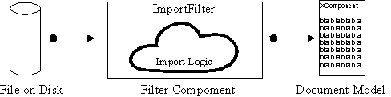
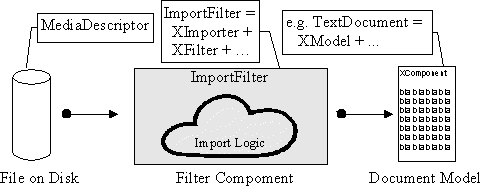
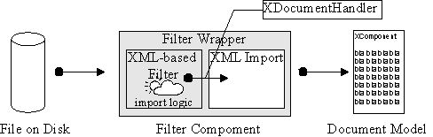
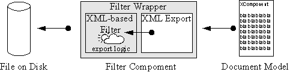
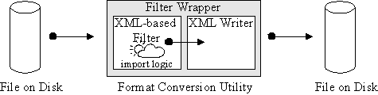
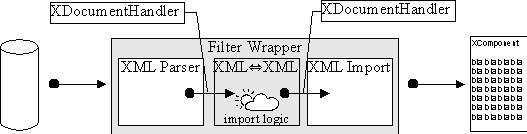

OpenOffice.org filters using the XML based file format
Abstract: This document explains the implementation of OpenOffice.org import and export filter components, focusing on filter components based on the OpenOffice.org XML file format. It is intended as a brief introduction to developers that want to implement OpenOffice.org filters for foreign file formats.
Table Of Contents
2 The Innards of an OpenOffice.org Filter Component
2.3 Waiter, the Export Please!
2.4 A Second Look at the Filter Wrapper
2.8 Registering a New Filter With the Application
3.1 The Filter Wrapper: Instantiating the XML Filters
3.2 Exporting through the XML filter
1Preliminaries
They are several ways to get information into or out of OpenOffice.org: You can
link against the application core,
use the OpenOffice.org API,
use the XML file format.
Each of these ways has unique advantages and disadvantages, that I will briefly summarize:
Using the core data structure and linking against the application core is the traditional way to implement filters in OpenOffice.org. The advantages this method offers are efficiency and direct access to the document. However, the core implementation provides a very implementation centric view of the applications. Additionally, there are a number of technical disadvantages: Every change in the core data structures or objects will have to be followed-up by corresponding changes in code that use them. Hence filters need to be recompiled to match the binary layout of the application core objects. While these things are manageable (albeit cumbersome) for closed source applications, this method is expected to create a maintenance nightmare if application and filter are developed separately, as is customary in open sources applications. Simultaneous delivery of a new application build and the corresponding filters developed by outside parties looks challenging.
Using the OpenOffice.org API (based on UNO) is a much better way, since it solves the technical problems indicated in the last paragraph. The UNO component technology insulates the filter from binary layout (and other compiler and version dependent issues). Additionally, the API is expected to be more stable than the core interfaces, and it even provides a shallow level of abstraction from the core applications. In fact, the native XML filter implementations largely make use of this strategy and are based on the OpenOffice.org API.
The third (and possibly surprising choice) is to import and export documents using the XML based file format. UNO-based XML import and export components feature all of the advantages of the previous method, but additionally provides the filter implementer with a clean, structured, and fully documented view of the document. As a significant difficulty in conversion between formats is the conceptual mapping from the one format to the other, a clean, well-structured view of the document may turn out to be beneficial.
2The Innards of an OpenOffice.org Filter Component
First, we will try to get an overview of the import and export process using UNO components. Let's first attempt to gain a view of...
2.1The Big Picture
An in-memory OpenOffice.org document is represented by it's document model. On disk, the same document is represented as a file. An import component must turn the latter into the former as shown by the diagram (Illustration 1).

Illustration
1: a generic import filter
If you make use of UNO, this diagram can be turned into programming reality quite easily. The three entities in the diagram, (the file, the model, and the filter) all have direct counterparts in UNO services. The services themselves may consist of several interfaces that finally map into C++ or Java classes. The following diagram annotates the entities with their corresponding services and interfaces:

Illustration
2: services and interfaces used by an import filter
In Illustration 2 (and all following illustrations) the gray part marks the part a filter implementer will have to program, while the white parts are already built into OpenOffice.org.
If the implementer decides to make use of the OpenOffice.org API
directly, this diagram is the proper starting point: The filter
writer must create a class that implements the ImportFilter
service. To achieve this, the the InputStream must be
obtained from the MediaDescriptor. The incoming data can
then be interpreted, and the OpenOffice.org document can be
constructed by calling the appropriate methods of the document model.
(The available methods of course depend on the kind of document, as
described by the document service.)
2.2Where XML Comes In...
If the advantages of an XML based import or export are desired, the filter implementer may make use of the existing XML import and export components. This way, the import logic does not need to deal with the document model itself, but rather generates the document in its OpenOffice.org XML file format representation. Done in a naive way, such a filter component would generate the XML, write it to file, and then call the built-in XML import to read it again. Since the XML import is based on the SAX API however, a better way exists: The import logic calls the SAX API. Since the XML reader component implements the SAX API, the document thus gets translated from the foreign format into its XML representation and then into the document model without the need to use temporary files, or even to render and subsequently parse an XML character stream.

Illustration
3: an XML-based import filter
The link between the XML based import filter
and the XML reader is the SAX XDocumentHandler
interface. Using this model, the filter implementer has to implement
a class that takes a MediaDescriptor, reads the
corresponding file, and calls the XDocumentHandler
methods to generate the XML representation. Additionally, a filter
component (labelled "Filter Wrapper" in the diagram) needs
to be written that instantiates XML import component and the
self-written import filter.
2.3Waiter, the Export Please!
The export into a foreign format may of course be implemented in
the same fashion. Instead of the ImportFilter
service, the component now implements the ExportFilter
service. An XML-based export filter would implement the document
handler interface itself, and write the resulting document in the
proper format into the location indicated by the MediaDescriptor.
For an XML-based export filter, the schematic looks like this:

Illustration
4: an XML-based export filter
2.4A Second Look at the Filter Wrapper
How do the built-in XML export or import components cooperate with
the self-programmed filter? As was briefly mentioned above, the
export filter services consist of two major interfaces: XImporter
or XExporter for import and export, respectively, and
XFilter for both filter types. The former interface
passes in the actual document to be imported to or exported from,
while the XFilter interfaces triggers the filtering
process and passes in the MediaDescriptor which
describes the source or target document.
In the case of an XML-based filter, this functionality gets
distributed to two components. For the import, the built-in XML
import component implements the XImporter interface as
well as XDocumentHandler. The XML-based filter
component should implement the XFilter interface, and
additionally provide a way to set an XDocumentHandler.
The filter wrapper then needs to instantiate both components and
connect them by setting the built-in XML import as the document
handler of the XML-based filter. The wrapper can then delegate the
XImporter calls to the XML import and the XFilter
calls to the XML-based filter, thereby implementing the filter
ImportFilter service.
The export case is slightly more complicated. The additional
problem is that the filter(…) call of the XFilter
interface provides the MediaDescriptor and
simultaneously controls the filter process. However, in the desired
setup for an XML-based export filter, the built-in XML export
controls the filtering process, but the XML-based filter handles the
file output, and hence needs the MediaDescriptor.
Therefore the filter wrapper has to operate as follows: First it has
to instantiate the XML-based export filter. This filter has to
implement the XDocumentHandler interface. Then it has to
instantiate the XML export, which at instantiation time expects the
document handler as a parameter. The filter wrapper delegates calls
to both the XFilter and the XExporter
interface to the XML export. For calls to the filter method of
XFilter, it additionally has to pass the
MediaDescriptor on to the XML-based export filter.
The means by which this should happen is left to the implementer.
2.5The Services
We should now have a closer look at the involved services:
The service com.sun.star.document.ImportFilter
describes a generic import filter. The core of the service is
provided by the interfaces XImporter and XFilter
(see below). XImporter supplies the filter object with
the target document (in form of an XComponent). The
XFilter is used to actually start the filtering process,
supplying the MediaDescriptor for the source file as a
parameter. Additionally, the ImportFilter service
supports XInitialization and XPropertySet
interfaces. The XInitialization interface serves to pass
parameters to the filter at initialization time, while the
XPropertySet can be used to get information from and
about the filter component. It is generally read-only.
The twin of the ImportFilter is the service
com.sun.star.document.ExportFilter.
The main interfaces are XExporter and XFilter.
The XExporter supplies the filter with the source
document, whereas the XFilter starts the filter process.
The MediaDescriptor that gets passed into the
XFilter describes the output file. The ExportFilter
supports the XInitialization and
XPropertySet interfaces, just like the ImportFilter.
The com.sun.star.document.MediaDescriptor
finally collects all information about a source or target file to be
imported from or exported to. It contains meta information (such as
the file name), as well as an InputStream which can be
used to actually manipulate the file. Caveat: Objects
obtained from the MediaDescriptor may not be referenced
or otherwise held longer beyond the filter(
method call. Doing so (e.g., keeping a reference to the …)InputStream
obtained from the MediaDescriptor prevents the
InputStream from being closed.)
The document model cannot be described by a single service, as it
obviously has to vary greatly, depending on the type of document (e.g.,
text or spreadsheet.) An example for a document model service is the
com.sun.star.text.AdvancedTextDocument
service. What is important in this context, is that all document model
services support the XComponent interface.
2.6Interfaces
The com.sun.star.document.XFilter
interface features only two methods: filter(…) and
cancel(). The former starts the filtering process based
for the given MediaDescriptor, while the latter cancels
an ongoing filter process. XFilter must be implemented
for both, import and export filters.
The interface com.sun.star.document.XImporter
is used for setting up an import before the filter(
method from the …)XFilter interface is called. The
XImporter supplies the document with its (empty) target
document, i.e., the document whose content is about to be read from
file.
The com.sun.star.document.XExporter
is structured identically to the XImporter interface. It
is used to set the target document, i.e., the document whose content
should be written to file.
The com.sun.star.xml.sax.XDocumentHandler
is the core interface for handling XML data in OpenOffice.org. It is
part of the SAX interface. It has methods for all parts of XML
documents, like start or end of elements or runs of characters. The
XDocumentHandler interface is used for both, incoming
and outgoing XML data, thus allowing chaining of components handling
XML. A component that processes XML data should implement the
XDocumentHandler interface. A component that will
generate XML data should call the methods of an XDocumentHandler
to output the events. The XExtendedDocumentHandler,
being derived from XDocumentHandler, provides
an extended version that can also handle comments. If the extended
functionality is desired, the XDocumentHandler should be
queried for the XExtendedDocumentHandler at
runtime. However, implementers should make sure their components
never rely on the presence of extended XExtendedDocumentHandler,
but rather make sure they could also work with the plain
XDocumentHandler. Since all vital parts of XML can be
handled through XDocumentHandler, this should not pose
much of a problem.
The interface com.sun.star.lang.XComponent
is the parent interface for all document models. Actual documents
derive from this model to provide model specific functionality, such
as XTextDocument.
A filter will have to query at runtime whether it can handle the
supplied XModel.
Initialization of components can be supported through the
com.sun.star.lang.XInitialization
interface.
Properties of the filters can be queried using the
com.sun.star.beans.XPropertySet
interface. The names of the supported properties are part of the
service description. In general, XPropertySet
implementations support both reading and writing, but the intended
use for filter components is to be read-only.
2.7Built-in Components
All of OpenOffice.org's applications have built-in XML import and export components. The component names are summarized in the following table:
|
Application |
XML import |
XML export |
|---|---|---|
|
Writer |
com.sun.star.comp.Writer.XMLExporter |
com.sun.star.comp.Writer.XMLImporter |
|
Calc |
com.sun.star.comp.Calc.XMLExporter |
com.sun.star.comp.Calc.XMLImporter |
|
Chart |
com.sun.star.comp.Chart.XMLExporter |
com.sun.star.comp.Chart.XMLImporter |
|
Impress |
com.sun.star.comp.Impress.XMLExporter |
com.sun.star.comp.Impress.XMLImporter |
|
Draw |
com.sun.star.comp.Draw.XMLExporter |
com.sun.star.comp.Draw.XMLImporter |
Additionally, the XML reader and writer components should be
mentioned, even though they have not been discussed in the previous
chapters. These two components implement the XML reader (or parser)
and writer (or unparser) components used by OpenOffice.org for
writing all it's XML files. They implement (XML writer) or use (XML
parser) the XDocumentHandler interface. In some sense
they could be considered XML-based filters, since they read or write
character streams and turn them into SAX function calls. Their names
are com.sun.star.xml.sax.Writer and
com.sun.star.xml.sax.Parser, respectively.
2.8Registering a New Filter With the Application
There is a final, crucial step that will not be covered here: Registering a filter with the application. The registration process will make sure that the application knows the filter, and also knows which files the filter can be applied to. The filter registration is described here.
3Code examples
This chapter is intended to give brief code examples for the crucial steps in creating XML-based import or export filters. We'll start with the filter wrapper, followed by short examples for importing into and export from the XML filters.
3.1The Filter Wrapper: Instantiating the XML Filters
The filter wrapper needs to instantiate the built-in XML import or export components. The following code snippet will demonstrate this for an XML-based export filter.
using namespace ::com::sun::star;// Instantiate the XML export filter// Prerequisites:// 1) a service factory,// 2) a document handler,// 3) a string with the service name.// Obtain the service factoryuno::Reference< lang::XMultiServiceFactory > xServiceFactory = …;// Obtain (or create) the XML-based output filter. It has to implement// the XDocumentHandler interface, so the export component can write to it.uno::Reference< xml::sax::XDocumentHandler > xHandler = … <your filter>…;// Prepare arguments passed to the XML export filter:// The XML-based filter in form of an XdocumentHandler.// Arguments are passed by a sequence of Any.// Our sequence will contain only 1 element.uno::Sequence<uno::Any> aArgs(1);aArgs[0] <<= xHandler;// Instantiate the exporter from the factory.::rtl::OUString sService =::rtl::OUString::createFromAscii("com.sun.star.comp.Writer.XMLExporter");uno::Reference< document::XExporter > xExporter(xServiceFactory->createInstanceWithArguments(sService), aArgs ),uno::UNO_QUERY );ASSERT( xExporter.is(), "can' instantiate XML exporter" );// Now we have the two components in xHandler and xExporter and can start// calling the XFilter and XExporter methods. Note that the xHandler needs// to be informed about its MediaDescriptor.
3.2Exporting through the XML filter
The following code snippet could be located in a filter wrapper for an XML-based export filter. The following two methods implement the gist of a filter wrapper for an XML-based export. They are really simple because the filter wrapper doesn't really do much of its own. It only delegates to it's two components.
using namespace ::com::sun::star;void SAL_CALL <filter wrapper>::setSourceDocument(const uno::Reference<lang::XComponent>& xComponent ){// delegate to XExporter of the built-in XML exportxExporter->setSourceDocument( xComponent );}sal_Bool SAL_CALL <filter wrapper>::filter(const uno::Sequence<beans::PropertyValue>& aDescriptor )throw(uno::RuntimeException){// set MediaDescriptor at XML-based export filter...// get access to XFilter interface of XML exportuno::Reference<document::XFilter> xFilter(xExporter, uno::UNO_QUERY);xFilter->filter(aDescriptor);}
3.3Import: Writing into the XML Filter
The next example should detail how an import filter would
communicate with the XML import component. Basically, it only needs
to call the XDocumentHandler methods. The following code
implements the notorious "Hello World!" program as an
OpenOffice.org import filter.
using namespace ::com::sun::star;
// instantiate the XML import component
::rtl::OUString sService =
::rtl::OUString::createFromAscii("com.sun.star.comp.Writer.XMLImporter")
uno::Reference<xml::sax::XDocumentHandler> xImport(
xServiceFactory->createInstance(sService), uno::UNO_QUERY );
ASSERT( xImport.is(), "can't instantiate XML import" );
// OK. Now we have the import. Let's make a real simple document.
// a few comments:
// 1. We will use string constants from xmloff/xmlkywd.hxx
// 2. For convenience, we'll use a globally shared attribute list from the
// xmloff project (xmloff/attrlist.hxx)
// 3. In a real project, we would pre-construct our OUString, rather than use
// the slow createFromAscii(…) method every time.
// We will write the following document: (the unavoidable 'Hello World!')
// <office:document
// office:class="text"
// xmlns:office="http://openoffice.org/2000/office"
// xmlns:text="http://openoffice.org/2000/text" >
// <office:body>
// <text:p>Hello World!</text:p>
// </office:body>
// </office:document>
SvXMLAttributeList aAttrList;
xHandler->startDocument();
// our first element: first build up the attribute list, then start the element
// DON'T FORGET TO ADD THE NAMESPACES!
aAttrList.AddAttribute(
::rtl::OUString::createFromAscii("xmlns:office"),
::rtl::OUString::createFromAscii("CDATA"),
::rtl::OUString::createFromAscii("http://openoffice.org/2000/office") );
aAttrList.AddAttribute(
::rtl::OUString::createFromAscii("xmlns:text"),
::rtl::OUString::createFromAscii("CDATA"),
::rtl::OUString::createFromAscii("http://openoffice.org/2000/text") );
aAttrList.AddAttribute(
::rtl::OUString::createFromAscii("office:class"),
::rtl::OUString::createFromAscii("CDATA"),
::rtl::OUString::createFromAscii("text") );
xHandler->startElement(
::rtl::OUString::createFromAscii("office:document"),
aAttrList );
// body element (no attributes)
aAttrList.clear();
xHandler->startElement(
::rtl::OUString::createFromAscii("office:body"),
aAtrList );
// paragraph element (no attributes)
aAttrList.clear();
xHandler->startElement(
::rtl::OUString::createFromAscii("text:p"),
aAtrList );
// write text
xHandler->characters(
::rtl::OUString::createFromAscii("Hello World!") );
// close paragraph
xHandler->startElement(
::rtl::OUString::createFromAscii("text:p"),
// close body
xHandler->endElement(
::rtl::OUString::createFromAscii("office:body") );
// close document element
xHandler->endElement(
::rtl::OUString::createFromAscii("office:document") );
// close document
xHandler->endDocument();
4Appendix
4.1 Other Uses
This chapter briefly mentions a few other uses of XML-based filter components that provide additional value and versatility.
In some circumstances, it may be desirable to have standalone
format conversion tools. This would, for example, enable batch
conversion of legacy documents. The XML-based filter components allow
us to do that with little extra effort. Let us recall that an
XML-based import filter uses OpenOffice.org's built-in XML import to
generate the document. It calls the (generic) XDocumentHandler
interface after it has been supplied with the XDocumentHandler
implementation by the filter wrapper. Now if the filter wrapper
instead supplies the XML-based import filter with the XML writer
component (which implements the XDocumentHandler
interface as well), then the XML writer component will output the XML
as a character stream to disk. Thus we have created the desired
standalone conversion utility by only implementing a new filter
wrapper!

Illustration
5: a standalone file format conversion utility
A different possible use is the chaining of
XML-based filters. Suppose the foreign file format in question is
also based on XML. Now it doesn't make sense to re-implement the XML
parser inside that component, so it seems natural to use the existing
parser (or unparser) component. This way, our import (or export)
filter would have to implement the XDocumentHandler
interface for its input, and also use an XDocumentHandler
interface for its output. The resulting implementation is sketched in
Illustration 6. Note that such XML to XML filters could be chained
arbitrarily.

Illustration
6: a filter chain with one element
Note that, if the other application is also an OpenSource application, it could use UNO component technology as well, and thus use the very same filter components for its own import and export. A filter converting from the foreign XML into OpenOffice.org XML would be an import filter for OpenOffice.org, and simultaneously an export filter for the other application.
As OpenOffice.org is being developed further, it becomes likely that eventually changes to the file format will have to be made. It is mandatory to supply users with the ability to read and write the old formats of course. This could indeed be handled by an XML to XML transformation, with one format being the old OpenOffice.org XML format, and the other being the new format.
Note that such a filter could also be used by users of the older versions to read and write documents in the new format! Additionally, it could be chained between other XML-based import or export filters, allowing users to utilize import and export filters for versions other than their own. Essentially, this would achieve a decoupling of application, filter, and file format version. The opportunities this opens up are quite amazing: If a new file format is implemented, users would not be forced to upgrade their application to make use of the new filter. Also, users of newer application versions could still use filters developed for the older format.
4.2Resources
The following resources may provide additional information:
Tutorial "How to register a component": http://framework.openoffice.org/documentation/filters/index.html
XML file format specification: http://xml.openoffice.org/xml_specification.pdf
Tutorial "A Component in C++": http://udk.openoffice.org/cpp/man/component_tutorial.html
OpenOffice.org API Reference: http://api.openoffice.org/common/ref/
OpenOffice.org XML Homepage: http://xml.openoffice.org
OpenOffice.org Framework Homepage: http://framework.openoffice.org
OpenOffice.org API Homepage: http://api.openoffice.org/
OpenOffice.org UNO Homepage: http://udk.openoffice.org/